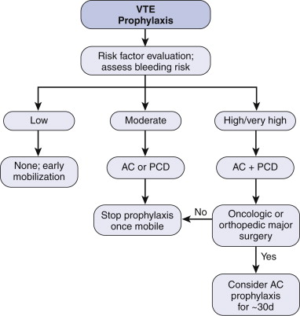

DVT Prophylaxis
Options are pharmacological, mechanical or combination.
- hmwh (e.g 5000 heparin SC bd) and lmwh (e.g. clexane 20-40 daily)
similar efficacy but probably clexane has lower bleeding and HIT
risk.
Malignancy is the paramount risk factor
Consider
Personal risk factors (e.g. smoker)
Disease risk factors (e.g. malignancy)
Procedural risk factors (e.g. laparoscopy higher)
Immobility risk factors (e.g. trauma, orthopedic surgery).
Surgical Patients
Low Risk
Moderate Risk
High Risk
Medical Patients
Low Risk
Moderate Risk
High Risk
Dose adjustment in renal impairment
Anti VTE compression stockings
Average pressure 18mmHg; not graduated
No evidence that stockings and calf compressors together reduce
risk, but reasonable to do both to ensure a transition to the other.
Surgical Patients

Low Risk Patients
<30 min operation, regardless of age
>30 min operation and <40 years
not laparoscopic surgery
No prophylaxis required
Moderate Risk Patients
>30 min operation and >40 years
Cancer
High dose estrogen therapy
Epidural
Graduated compression stockings
20mg sc enoxaparin nocte (commenced the night before surgery)
continued until fully mobilising
High Risk Patients
Previous DVT/PE
Pelvic surgery
Known thrombophilia
>2hr operation
Orthopaedic surgery of pelvis, hip or lower limb
Multiple trauma
Graduated compression stockings
Intraoperative pneumatic calf compression
40mg enoxaparin nocte (commenced the night before surgery)
continued until fully mobilising
Consider also extended prophylaxis as per
algorithm above
- 30d required in patients with abdominal malignancy and pelvic
cancer / surgery
--> evidence for reduced VTE and improved outcomes
Pre-surgical or early (<6h) post-surgical?
- either probably equally ok.
- but slightly higher bleeding risk with preoperative
administration.
Epidural catheters
Esp risk with LMWH, in presence of spinal or epidural catheters
Risk is epidural haematoma and cord compromise
Increases with coagulopathy, traumatic insertion, old age, females.
E.g. allow 2h between prophylaxis administration and catheter
removal.
Non-Op
Patients
Low Risk
Minor medical illness
Consider graduated compression stockings
Moderate Risk
Immobilised patient with active disease,
<70 years old and without additional risk factors
Graduated compression stockings
40mg enoxaparin nocte for 6-14 days
High Risk
>70 years
Stroke
Congestive cardiac failure
Presence of shock
History of DVT/PE
Cancer
Thrombophilia
Graduated compression stockings
40mg enoxaparin nocte for 6-14 days
Consider pneumatic stockings
Dose
adjustment in renal impairment
Dose adjustment is required in patients with severe renal impairment
(EGFR <30ml/min)
Patients requiring 40mg sc nocte should be given only 20mg sc
Patients requiring 20mg sc nocte do not require dose adjustment
REFERENCES
RMO Clinical Handbook 2003, Auckland District Health Board
Clexane Dosing Recommendations Handbook
top home